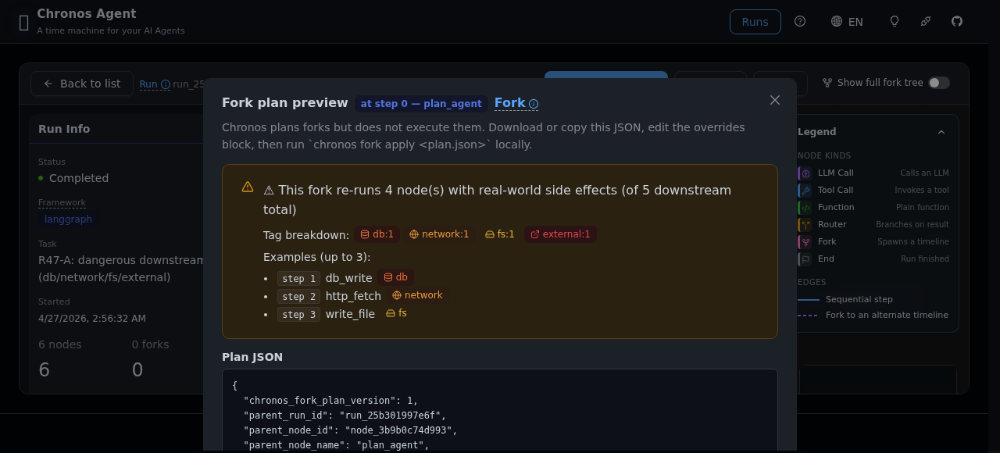
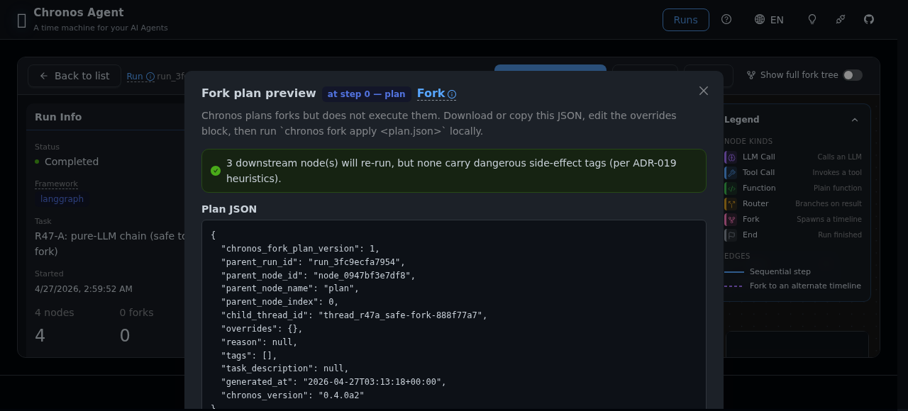
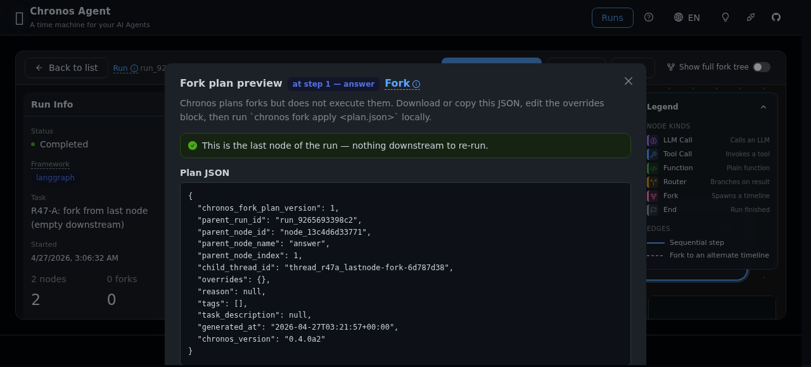

Forking safely: reading Chronos's effect-aware UX¶
Audience: you opened a recorded run in Chronos and want to fork from
some intermediate node. You want to know whether that fork will re-run
something dangerous (a database write, an HTTP POST, a file deletion)
before you hand the plan to chronos fork apply.
This guide walks through the three surfaces Chronos gives you for that:
- The adapter auto-tagging + node badge + drawer warning on every node (v0.3.0 / PH3-02).
- The
chronos fork planCLI preview panel on your terminal (v0.3.1 / PH3-03). - The Web UI "Fork plan preview" modal on the tree page (v0.4.0-alpha / PH3-04).
All three read the same metadata.effects tags on the downstream
nodes. They are three projections of the same truth. Chronos plans
forks but never executes them — see ADR-019 for why.
TL;DR — the decision table¶
| You see… | Chronos is telling you… | What to do |
|---|---|---|
| 🟢 Alert: "This is the last node of the run" | No downstream nodes. Fork is free. | Fork away. |
| 🟢 Alert: "N downstream node(s), but none carry dangerous side-effect tags" | Downstream is pure-LLM (or pure-function). Re-running is safe. | Fork away. Cost = N×LLM calls. |
🟠 Alert: "This fork re-runs N node(s) with real-world side effects" with tags like db:1 network:2 fs:1 |
One or more downstream nodes will re-issue real-world actions if you blindly apply the plan. | Stop. Read side-effects.md and apply one of the three patterns (mock transport / envvar / plan-actuator split) before running chronos fork apply. |
Surface 1 — Adapter tag + drawer warning¶
When you open a run in the Web UI and click any node, the right-side
Drawer shows a Node Details panel. If that node carries
metadata.effects (auto-tagged by the adapter at record time, see
side-effects.md §How Chronos tags), you get:
- A red "effects: db, network" badge under the node name.
- A warning Alert: "⚠️ This node touches real-world state (db, network). Forking from here will re-run it."
- A danger-styled "Fork here" button at the bottom of the drawer.
Clicking the Fork button opens Surface 3 (the modal).
Screenshot — warning drawer¶
The drawer itself is not captured separately in this guide; it's fully covered inside Surface 3 below.
Surface 2 — CLI chronos fork plan¶
On your terminal, generate a fork plan. The effects preview is rendered by default alongside the Plan panel:
You get a Plan panel (the JSON artifact you would later feed to
chronos fork apply) preceded by a Downstream side-effects preview
panel:
╭─ Downstream side-effects preview ────────────────────────────╮
│ ⚠ side effects: forking here may re-execute 4 dangerous │
│ downstream node(s) out of 5 total. │
│ breakdown: db=1, external=1, fs=1, network=1 │
│ examples: │
│ • step 1: db_write (db) │
│ • step 2: http_fetch (network) │
│ • step 3: write_file (fs) │
│ • … and 1 more │
│ Chronos does not sandbox fork execution (ADR-019). If these │
│ effects touch the real world, confirm duplicate invocations │
│ are safe before running the fork. │
╰───────────────────────────────────────────────────────────────╯
The silence principle applies: if dangerous_count == 0 the CLI
does not show the effects panel at all. No output = nothing to worry
about.
Machine-readable output¶
prints the raw ForkPlan JSON envelope to stdout and suppresses the
effects panel (the --json flag is stdout-only). For scripted pipelines
that want both the plan and the effects summary, call the HTTP
endpoint documented in §5 below.
Surface 3 — Web UI Fork plan preview modal¶
From the tree page, clicking Fork here opens a modal (not a drawer — modals are for deliverables, drawers for aux context). Layout:
- Intro: "Chronos plans forks but does not execute them. Download or
copy this JSON, edit the overrides block, then run
chronos fork apply <plan.json>locally." - Effects summary Alert (this is the heart of the modal).
- Plan JSON block (scroll-locked to 320px).
- Next-steps paragraph with the exact command to run.
- Footer: Close · Copy · Download buttons.
The modal reverses the CLI's silence principle: even when downstream is safe, it shows a green success Alert — because in a modal context silence looks broken. ("I clicked Fork, nothing happened.")
3.1 The dangerous case — orange Alert¶

What to read:
- "This fork re-runs 4 node(s) with real-world side effects (of 5
downstream total)" — 4 out of 5 downstream nodes carry effect tags.
- Tag breakdown — a horizontal row of pills: db:1 network:1
fs:1 external:1. Same counts as the CLI panel.
- Examples (up to 3) — first three dangerous nodes by step index.
Action: do not press Download → apply blindly. Read the examples,
match them against your adapter code, and decide which of the three
side-effect patterns in side-effects.md you want to
apply.
3.2 The pure-LLM safe case — green Alert¶

What to read: - "3 downstream node(s) will re-run, but none carry dangerous side-effect tags (per ADR-019 heuristics)." — downstream is pure-LLM. - No tag breakdown, no examples — there's nothing dangerous to list.
Action: safe to proceed. Edit the overrides block (change a prompt /
model / temperature), save the JSON, and run
chronos fork apply <plan.json>.
Caveat — "heuristics": effect tags come from adapter-side regex
against node names and tool-call payloads. A function called
format_report that internally writes to disk will not be tagged.
If your adapter doesn't auto-tag a dangerous tool, pass
effects_map={"format_report": ["fs"]} into the recorder. See
side-effects.md §Tagging.
3.3 The last-node safe case — green Alert¶

What to read: - "This is the last node of the run — nothing downstream to re-run." - Forking from the last node is purely symbolic — it gives you a plan envelope you can edit and replay from, but with zero downstream replay cost.
Action: always safe. Useful for "let me re-run just this final step with a different prompt" workflows.
4. Download → edit → apply — the three-step dance¶
Chronos never mutates a fork plan on your behalf. The expected workflow is:
# 1. Preview (any of the three surfaces above — this example uses the Web UI)
# → Download button writes fork-plan-<runId>-step<N>.json locally.
# 2. Edit the overrides block in your editor:
$ $EDITOR fork-plan-run_92f53-step0.json
# Change prompts, swap the model, tighten temperature, inject a
# mocked tool definition… whatever hypothesis you want to test.
# 3. Apply the plan — this is where execution actually happens:
$ chronos fork apply fork-plan-run_92f53-step0.json --db chronos.db
Step 3 is the only step that re-executes anything. Steps 1 and 2 are pure planning and editing. If the effects preview scared you, you still have a full edit cycle to defuse before any real side effect happens.
5. HTTP endpoint — GET /runs/{run_id}/nodes/{node_id}/fork-plan¶
The Web modal calls this endpoint. You can hit it directly:
$ curl http://127.0.0.1:8765/runs/<run_id>/nodes/<node_id>/fork-plan
{
"plan": { "chronos_fork_plan_version": 1, ... },
"effects_summary": {
"total": 5,
"dangerous_count": 4,
"tag_counts": { "db": 1, "network": 1, "fs": 1, "external": 1 },
"dangerous_samples": [
[1, "db_write", ["db"]],
[2, "http_fetch", ["network"]],
[3, "write_file", ["fs"]]
]
}
}
planis the rawForkPlanenvelope (v0.1.1+ contract, stable).effects_summaryis an advisory object — the shape is stable but not part of theForkPlanschema.
Integration idea: scripted fork campaigns that want the CLI's
--preview-effects data without shelling out should call this
endpoint.
6. Per-tool effect overrides (AutoGen, v0.4.0a2+)¶
The classifier tags effects by matching keyword patterns against the
adapter-emitted node_name. Graph-based adapters (LangGraph) already
produce function-shaped names, so effects Just Work. Message-based
adapters (AutoGen) have to synthesize a name — see
ADR-020 for
the convention.
For AutoGen, tool event node_names take the shape:
Examples:
coder:ToolCallExecutionEvent:fetch_weather_api→["network"]analyst:ToolCallRequestEvent:read_file+query_db→["fs", "db"]
You can override or extend the classifier's verdict per-tool via the
effects_map kwarg on the recorder. Keys are exact-match against
node_name:
from chronos.adapters.autogen import AutoGenRecorder
recorder = AutoGenRecorder(
store,
effects_map={
# Mark a specific tool as "external" (fire-and-forget API call)
"coder:ToolCallExecutionEvent:fetch_weather_api": ["external"],
# Clear tags on a known read-only tool the classifier over-tagged
"analyst:ToolCallExecutionEvent:list_users": [],
},
)
If you don't supply an effects_map entry, the classifier's keyword
regex still runs. The override is only consulted when the key matches
exactly.
Discovery path: if your override isn't taking effect, check the
actual node_name strings your recorder emitted:
for node in store.get_nodes_for_run(run_id):
print(f"{node.kind} {node.node_name} effects={node.metadata.get('effects')}")
Keys in effects_map must match those strings character-for-character.
6a. CrewAI adapter — event-bus paradigm (v0.4.0+)¶
The CrewAI adapter (ADR-021, pin
>=0.80,<2.0 per ADR-022)
subscribes to crewai_event_bus inside record()'s scoped_handlers()
context manager. This sits on a third paradigm — neither LangGraph's
state-dict nor AutoGen's message list, but a per-run scoped event
bus with ThreadPoolExecutor dispatch.
Recording shape (ADR-021 §D5 — sync-first, no asyncio.run):
from crewai import Agent, Crew, Task, Process, LLM
from crewai.tools import tool
from chronos.adapters.crewai import crewai_adapter
from chronos.store import SqliteStore
@tool("fetch_weather_api")
def fetch_weather(city: str) -> str:
"""Fetch live weather for a city (network effect)."""
return f"It is sunny in {city}."
llm = LLM(
provider="openai", # R54: explicit provider="openai"
model="GLM-5", # bypasses LiteLLM native-constants
base_url="https://...", # validation for OneAPI aliases
api_key="...",
)
investigator = Agent(role="investigator", goal="...", llm=llm, tools=[fetch_weather])
task = Task(description="...", agent=investigator, expected_output="...")
crew = Crew(agents=[investigator], tasks=[task], process=Process.sequential)
with SqliteStore.open("chronos.db") as store:
with crewai_adapter.build_recorder(store).record(
crew, thread_id="t1"
) as ref:
result = crew.kickoff(inputs={"topic": "weather"})
ref.submit_result(result) # optional; records Run.final_state
# run_id = ref.run_id is available here, after handlers have flushed
What gets recorded¶
On crewai_event_bus, the recorder subscribes to the event families
listed in ADR-021 §D1 and
materializes them as Nodes with kind ∈ {llm, tool, fn, end}. The
adapter's classify_effects() sees CrewAI-shaped node_names (e.g.
ToolUsageStartedEvent:fetch_weather_api) and emits effect tags
consistent with the other adapters — a read_file tool gets ["fs"],
query_db gets ["db"], fetch_weather_api gets ["network"].
Pitfalls (empirically validated across R52–R55)¶
- OneAPI model names:
LLM(model="openai/GLM-5", ...)is rejected by LiteLLM's native-constants validator. Always passLLM(provider="openai", model="GLM-5", ...)— theprovider=keyword bypasses themodel=<ns>/<name>parse path. - Telemetry muting: set
CREWAI_DISABLE_TELEMETRY=1andOTEL_SDK_DISABLED=truewhen running in CI / live tests; otherwise CrewAI's OTel hooks race with the recorder's event-bus handler. - Optional dep:
crewaiships as[project.optional-dependencies].crewai, not core. Tests must guard withimportlib.util.find_spec("crewai")in addition toCHRONOS_LIVE/ API-key gates. - Event-bus handlers fire on a thread pool: the adapter's
scoped_handlers()CM takes care of this, but if you hand-roll a recorder you must callcrewai_event_bus.flush(timeout=...)before reading back from the store. ADR-021 §D2 explains why. - Fork: not supported yet (Phase 4 candidate). Record + classify +
diff work end-to-end on CrewAI v1.x;
fork()lands in a later milestone after the LangGraph-style checkpointer-equivalent design is ADR'd.
Live test reference¶
The three-adapter live-smoke suite is at tests/live/test_real_llm_smoke.py
(LangGraph + AutoGen) and tests/live/test_crewai_smoke.py (CrewAI).
Opt-in via CHRONOS_LIVE=1. Total wall-clock ≈ 3–4 minutes with
OneAPI GLM-5 as the backend.
7. Related reading¶
- ADR-019 — Chronos does not sandbox
- ADR-020 — Adapter tool-event
node_nameshape - ADR-021 — CrewAI adapter
- ADR-022 — CrewAI version pin
side-effects.md— three patterns for making your side-effecting tools fork-safe.- ADR-013 — fork auto-execution stays frozen
安全 Fork 指南：读懂 Chronos 的副作用感知 UX¶
面向场景： 你在 Chronos 里打开了一个已录制的 run, 想从某个中间节点
分叉 (fork), 但在把 plan 交给 chronos fork apply 之前, 你想知道
这个 fork 会不会重跑什么危险的东西 (数据库写入、HTTP POST、文件删除)。
本文覆盖 Chronos 为此提供的三个界面:
- Adapter 自动打标签 + 节点角标 + drawer 警告 (v0.3.0 / PH3-02)
chronos fork planCLI 预览面板 (v0.3.1 / PH3-03)- Web UI "Fork plan preview" 模态框 (v0.4.0-alpha / PH3-04)
三者读的是下游节点上同一份 metadata.effects 标签, 是同一个真相的
三种投影。Chronos 规划 fork, 从不执行 fork — 见 ADR-019.
TL;DR — 决策表¶
| 你看到… | Chronos 在告诉你… | 怎么办 |
|---|---|---|
| 🟢 Alert: "这是 run 的最后一个节点" | 没有下游节点, fork 零代价 | 放心 fork |
| 🟢 Alert: "N 个下游节点, 但都没有危险副作用标签" | 下游是纯 LLM (或纯函数), 重跑安全 | 放心 fork, 成本 = N×LLM call |
🟠 Alert: "此 fork 将重跑 N 个带真实副作用的节点" 带 db:1 network:2 fs:1 类标签 |
下游有节点会再次触发真实世界动作 | 停. 读 side-effects.md, 先上三种模式 (mock transport / envvar / plan-actuator 拆分) 之一, 再跑 chronos fork apply |
界面 1 — Adapter 标签 + Drawer 警告¶
Web UI 里打开 run, 点任意节点 → 右侧 Drawer 展开 Node Details 面板。
如果该节点 metadata.effects 非空 (录制时 adapter 自动打的标签):
- 节点名下方一条红色 "effects: db, network" 角标
- 一条 warning Alert: "⚠️ 此节点触碰了真实世界状态 (db, network). 从这里 fork 会重跑它."
- Drawer 底部一枚 danger 样式的 "Fork here" 按钮
点 Fork 按钮 → 打开界面 3 (模态框).
界面 2 — CLI chronos fork plan¶
终端 (effects 预览默认打印):
打印 Plan 面板 (fork plan JSON artifact), 紧接着 Downstream effects 面板 (同上英文例子).
静默原则: 若 dangerous_count == 0, CLI 不打印 effects 面板.
零输出 = 没啥好担心的.
机器可读输出 --json: 只输出 ForkPlan envelope 到 stdout,
抑制 effects preview. 脚本场景若同时想要 plan + effects summary,
走 §5 的 HTTP 端点.
界面 3 — Web UI "Fork plan preview" 模态框¶
Tree 页点 Fork here → 弹模态框 (不是 drawer — 模态框装产出物, drawer 装辅助上下文). 版式:
- Intro: "Chronos plans forks but does not execute them…"
- Effects summary Alert (核心)
- Plan JSON 块 (锁定 320px 高度, 可滚动)
- Next-steps 段, 含精确命令
- 页脚: Close · Copy · Download 三按钮
模态框反转了 CLI 的静默原则: 即使下游安全也必须显示 green success Alert — 模态框里的静默=坏了 ("我按了 Fork 啥反应都没有").
3.1 危险场景 — 橙色 Alert¶
关键读点:
- "此 fork 将重跑 4 个带真实副作用的节点 (共 5 个下游)"
- Tag breakdown 横排 pill: db:1 network:1 fs:1 external:1
- Examples (最多 3 个) — 按 step index 取前三个危险节点
动作: 别直接 Download → apply. 对照你的 adapter 代码,
从 side-effects.md 三种模式里挑一个再动手.
3.2 纯 LLM 安全场景 — 绿色 Alert¶
关键读点: - "3 个下游节点会重跑, 但都没有危险副作用标签 (按 ADR-019 启发式)" - 无 tag breakdown, 无 examples
动作: 放心改 overrides 块 (prompt / model / temperature), 存盘,
跑 chronos fork apply <plan.json>.
"启发式"警示: effect 标签来自 adapter 侧对 node name / tool-call
payload 的正则识别。一个叫 format_report 的函数如果内部偷偷写盘,
不会被打标签。自己的工具要补标签, 在 recorder 上传
effects_map={"format_report": ["fs"]}。详见 side-effects.md.
3.3 最后节点安全场景 — 绿色 Alert¶
关键读点: "这是 run 的最后一个节点 — 没有下游可重跑."
动作: 永远安全. 适合 "我就想用不同的 prompt 重跑最后一步" 的场景.
4. Download → edit → apply 三步舞¶
Chronos 绝不替你改 fork plan, 标准流程:
# 1. 预览 (三个界面任选, 此处 Web UI 为例)
# Download 按钮写出 fork-plan-<runId>-step<N>.json
# 2. 编辑 overrides 块:
$ $EDITOR fork-plan-run_92f53-step0.json
# 3. Apply — 这一步才真正执行:
$ chronos fork apply fork-plan-run_92f53-step0.json --db chronos.db
只有第 3 步会重跑任何东西. 第 1-2 步纯规划 + 编辑. 即便 preview 吓到 你, 你在触发任何真实副作用前, 还有完整的编辑周期拆弹.
5. HTTP 端点 — GET /runs/{run_id}/nodes/{node_id}/fork-plan¶
Web 模态框就是调这个端点. 也可以直接打:
返回:
- plan: 原生 ForkPlan envelope (v0.1.1+ 对外契约, 稳定)
- effects_summary: advisory 对象, 形状稳定但不属于 ForkPlan
schema
脚本化 fork 活动若想复用 CLI --preview-effects 数据而不 shell out,
走这条.
6. 按工具粒度的 effect 覆写 (AutoGen, v0.4.0a2+)¶
Classifier 通过关键词模式匹配 adapter 吐出的 node_name 来打 effects 标签。
基于图的 adapter (LangGraph) 天然就是函数名形状, 所以 effects 开箱即用。
基于消息的 adapter (AutoGen) 需要自己合成一个 node_name — 约定见
ADR-020。
AutoGen 的 tool event node_name 形状是:
示例:
coder:ToolCallExecutionEvent:fetch_weather_api→["network"]analyst:ToolCallRequestEvent:read_file+query_db→["fs", "db"]
通过 recorder 的 effects_map 参数可以按工具粒度覆写或扩展 classifier
的判决。key 是对 node_name 的精确匹配:
from chronos.adapters.autogen import AutoGenRecorder
recorder = AutoGenRecorder(
store,
effects_map={
# 把特定工具标记为 "external" (fire-and-forget API 调用)
"coder:ToolCallExecutionEvent:fetch_weather_api": ["external"],
# 清掉 classifier 误标的只读工具的标签
"analyst:ToolCallExecutionEvent:list_users": [],
},
)
如果没在 effects_map 里提供条目, 关键词正则照跑。覆写只在 key 精确匹配
时才被查询。
调试方法: 如果覆写没生效, 检查 recorder 实际吐出的 node_name:
for node in store.get_nodes_for_run(run_id):
print(f"{node.kind} {node.node_name} effects={node.metadata.get('effects')}")
effects_map 的 key 必须一字不差。
6a. CrewAI adapter — event-bus 范式 (v0.4.0+)¶
CrewAI adapter (ADR-021, pin
>=0.80,<2.0, 由 ADR-022 抬升)
在 record() 的 scoped_handlers() 上下文里订阅 crewai_event_bus.
这是第三种范式 — 既不是 LangGraph 的 state-dict, 也不是 AutoGen 的
message list, 而是按 run 作用域的事件总线 + ThreadPoolExecutor 派发.
录制形状 (ADR-021 §D5, sync-first, 不用 asyncio.run):
from crewai import Agent, Crew, Task, Process, LLM
from crewai.tools import tool
from chronos.adapters.crewai import crewai_adapter
from chronos.store import SqliteStore
@tool("fetch_weather_api")
def fetch_weather(city: str) -> str:
"""取某城市实时天气 (network 副作用)."""
return f"It is sunny in {city}."
llm = LLM(
provider="openai", # R54: 显式传 provider="openai"
model="GLM-5", # 绕开 LiteLLM native-constants
base_url="https://...", # 校验 (OneAPI 别名用)
api_key="...",
)
investigator = Agent(role="investigator", goal="...", llm=llm, tools=[fetch_weather])
task = Task(description="...", agent=investigator, expected_output="...")
crew = Crew(agents=[investigator], tasks=[task], process=Process.sequential)
with SqliteStore.open("chronos.db") as store:
with crewai_adapter.build_recorder(store).record(
crew, thread_id="t1"
) as ref:
result = crew.kickoff(inputs={"topic": "weather"})
ref.submit_result(result) # 可选, 记 Run.final_state
# CM 退出后 ref.run_id 已可用, handlers 已 flush
能录到什么¶
Recorder 订阅 ADR-021 §D1
列出的事件族, 物化成 kind ∈ {llm, tool, fn, end} 的 Node.
Adapter classify_effects() 看到 CrewAI 形状的 node_name
(如 ToolUsageStartedEvent:fetch_weather_api), 吐出与其它 adapter
一致的 effect tag — read_file 工具 ["fs"], query_db ["db"],
fetch_weather_api ["network"].
坑位 (R52–R55 经验)¶
- OneAPI 模型名:
LLM(model="openai/GLM-5", ...)被 LiteLLM native-constants 校验拒掉. 必须LLM(provider="openai", model="GLM-5", ...)—provider=关键字绕开model=<ns>/<name>解析分支. - 遥测静音: CI / live test 里设
CREWAI_DISABLE_TELEMETRY=1+OTEL_SDK_DISABLED=true, 否则 CrewAI 的 OTel 钩子会跟 recorder 的 event-bus handler 抢跑. - 可选依赖:
crewai在[project.optional-dependencies].crewai, 不是核心 dep. 测试除了CHRONOS_LIVE/ API-key gate 外还要用importlib.util.find_spec("crewai")守一下. - 事件总线 handler 在线程池里跑: adapter 的
scoped_handlers()CM 已处理好; 如果你自己搭 recorder, 读 store 前必须先crewai_event_bus.flush(timeout=...). 原因见 ADR-021 §D2. - Fork: 尚未支持 (Phase 4 候选). CrewAI v1.x 上 record + classify +
diff 端到端都 OK;
fork()等后面一个 milestone, 需要先 ADR 一个类 LangGraph checkpointer 的机制.
Live 测试参考¶
三 adapter live smoke 分布在 tests/live/test_real_llm_smoke.py
(LangGraph + AutoGen) 与 tests/live/test_crewai_smoke.py (CrewAI).
CHRONOS_LIVE=1 opt-in. OneAPI GLM-5 下墙钟合计 ≈ 3-4 min.